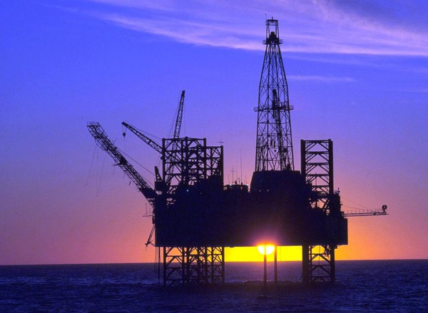

PROJETO 01
Palm Jumeirah
Uma ilha artificial planejada em formato de palmeira. O projeto abriga residências, hotéis e áreas de lazer, tornando-se um dos marcos mais conhecidos de Dubai.
TurismoUrbanismoEngenharia
Projeto escolar · 3º Informática
Como a riqueza energética transformou o deserto — e os desafios de construir cidades mais sustentáveis.
Explorar o projeto
A exploração de petróleo transformou a economia da região.
Antes da expansão do petróleo, comunidades da região viviam, entre outras atividades, da pesca, do mergulho em busca de pérolas e do comércio. A descoberta de petróleo mudou a escala da economia e ajudou a financiar estradas, escolas, hospitais e novas cidades.
Mas essa transformação não aconteceu por causa do petróleo sozinho: planejamento, comércio, turismo, investimentos e decisões políticas também tiveram um papel importante.
As receitas do petróleo e do gás ajudaram a acelerar a modernização dos Emirados. Elas financiaram infraestrutura e fortaleceram a presença do país no comércio internacional de energia.
Ao mesmo tempo, o petróleo é um recurso finito e sua queima libera gases de efeito estufa. Por isso, o desafio atual é manter a economia forte e ampliar outras atividades, como turismo, tecnologia, comércio e energias renováveis.
Em Dubai, projetos de ilhas artificiais ampliaram áreas costeiras e criaram novos espaços para moradia, hotéis e lazer. A construção em grande escala também levanta questões ambientais.
Uma ilha artificial planejada em formato de palmeira. O projeto abriga residências, hotéis e áreas de lazer, tornando-se um dos marcos mais conhecidos de Dubai.
Arquipélago artificial formado por ilhas organizadas para lembrar um mapa-múndi. O projeto foi concebido para criar destinos exclusivos e novas áreas de desenvolvimento.
A dragagem e a movimentação de sedimentos podem alterar habitats marinhos, a circulação da água e a qualidade dos ecossistemas costeiros. Grandes projetos precisam de estudos ambientais e monitoramento contínuo.
Jardins verticais são sistemas que permitem cultivar plantas nas paredes de edifícios. Em cidades densas e quentes, eles podem criar sombra, melhorar a experiência dos espaços e ajudar a reduzir o aquecimento de algumas superfícies.
Nos Emirados, porém, a água é um recurso limitado. Um jardim vertical só é uma solução responsável quando considera espécies adequadas ao clima, irrigação eficiente, manutenção e, quando possível, reutilização segura de água.
Os Objetivos de Desenvolvimento Sustentável da ONU ajudam a relacionar o crescimento urbano e econômico com necessidades essenciais para a população.
ÁGUA POTÁVEL E SANEAMENTO
O ODS 6 busca garantir água potável e saneamento para todos, com gestão responsável e uso eficiente da água.
O clima árido torna a gestão da água especialmente importante. Dessalinização, tratamento de águas residuais e redução do desperdício são temas centrais.
ENERGIA LIMPA E ACESSÍVEL
O ODS 7 propõe ampliar o acesso à energia confiável e acessível e aumentar a participação das fontes renováveis.
O petróleo teve grande importância econômica, mas a energia solar oferece uma oportunidade para aproveitar a forte incidência de sol e diversificar a matriz energética.
O desenvolvimento não é medido apenas por prédios altos e grandes obras. Também depende de como um país cuida da água, da energia e dos ambientes naturais.
Conclusão
Os Emirados Árabes Unidos mostram como os recursos energéticos podem transformar uma economia. As ilhas artificiais revelam a capacidade de engenharia, enquanto os jardins verticais e os ODS lembram que água, energia e natureza precisam fazer parte do planejamento.
Consultar as fontesMateriais usados como base para as informações do projeto.
Projeto educativo. Imagens ilustrativas; consulte as fontes para aprofundar os dados e o contexto histórico.